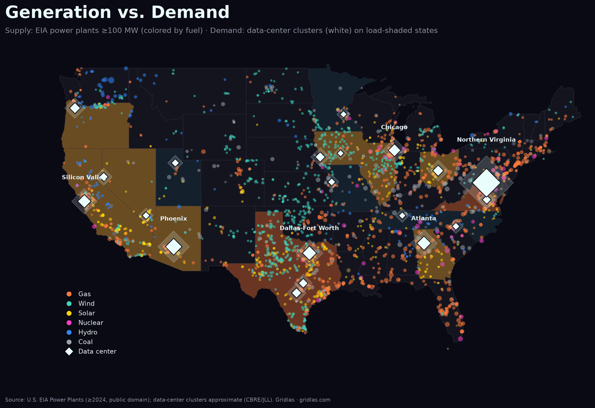

Executive summary
Electricity became AI's hardest constraint
U.S. data centers used 4.7% of the nation's electricity in 2024, and Lawrence Berkeley National Laboratory projects about 12% by 2030 (range 9.5–15.3%). Compute is built in months. New power plants take a median of about five years to connect to the grid, and data centers wait in their own utility queues. This summary maps where that collision is happening.
474 GW queued in Texas, about 90% of it data centers.
The 8 findings
1Demand is outrunning supply.4.7% of U.S. power in 2024, about 12% by 2030, needing roughly 148 GW of new grid connections (LBNL).
2A handful of metros dominate.Northern Virginia runs about 4,500 MW; Dallas–Fort Worth and Atlanta have each passed 1 GW (CBRE H1 2026).
3Texas is the breakout market.ERCOT's large-load queue went from 63 GW (end of 2024) to about 474 GW by June 2026.
4The queue is the real constraint.New power plants take a median of 61 months to connect. Of 2000–2020 requests, only 13% are operating; about 75% withdrew.
5Data centers wait in their own line.Utility large-load queues vary by utility; in Virginia, Dominion is assigning connection dates out to 2031.
6Gas is back.Gas interconnection requests jumped 86% to 253 GW in 2025, while solar, storage and wind requests fell.
7Behind-the-meter is surging.xAI's Colossus ran 35 gas turbines (~422 MW) on an 8 MW grid connection. Now turbines are the bottleneck.
8The next wave is moving inland.Atlanta has about 2,880 MW under construction, the most of any U.S. market; central Ohio is adding gigawatt campuses.
The chart that explains it
AI is colliding with the grid

Supply is everywhere (2,459 utility-scale plants), but demand concentrates onto specific, already-stressed grids. The full report ranks the top 15 metros, goes deep on Texas, Virginia, Arizona, Ohio and Georgia, and closes with a 12-month outlook.
Get the full report
36 pages · maps · interconnection analysis · five regional deep-dives
Report $99 · 12-Month Pass $349 · Team License (5 seats) $499
gridlas.com · free pages for 16 markets: gridlas.com/data-centers/
Sources: LBNL, Data Center Energy Usage Report: 2025 Update (June 2026) and "Queued Up" (2026 ed.); ERCOT large-load queue (July 2026); CBRE North America Data Center Trends H1 2026; Dominion Energy GS-5 Large-Load Rate Class Report (May 2026); U.S. EIA power-plant data. Data-center cluster figures are approximate. Independent research, unaffiliated. © 2026 Gridlas.